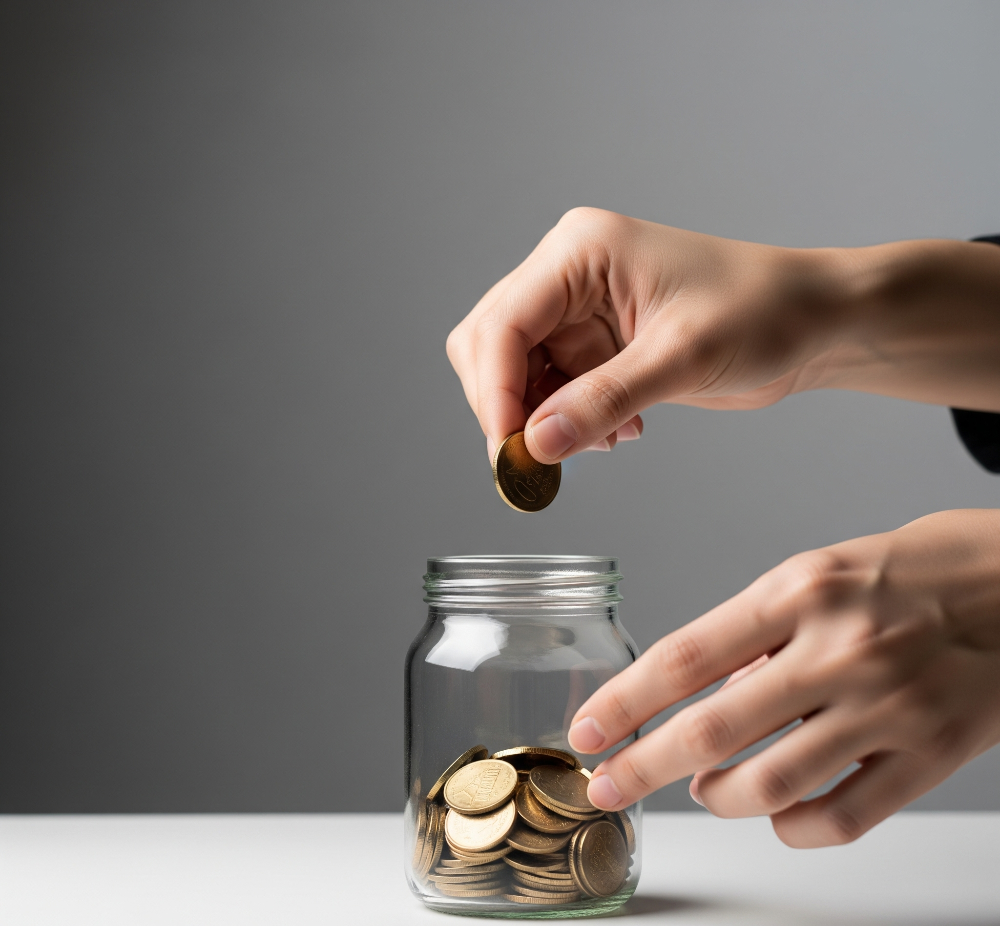

1. ทำไมต้องออมเงิน?
การออมเงินไม่ใช่แค่การเก็บเงินส่วนเกิน แต่คือ การสร้างอนาคตทางการเงินที่แข็งแกร่ง และเป็นเครื่องมือสำคัญในการบรรลุเป้าหมายต่างๆ ในชีวิต การมีเงินออมที่เพียงพอจะมอบความยืดหยุ่นและอิสระในการตัดสินใจทางการเงิน
1.1 สร้างความมั่นคงและอิสระทางการเงิน
- ลดความเครียดและความกังวล: เมื่อมีเงินออม คุณจะรู้สึกมั่นใจและสบายใจมากขึ้น เพราะรู้ว่ามีเงินสำรองสำหรับค่าใช้จ่ายที่จำเป็น และพร้อมรับมือกับเหตุการณ์ที่ไม่คาดฝัน
- มีอำนาจในการเลือก: เงินออมช่วยให้คุณมีทางเลือกในชีวิตมากขึ้น เช่น สามารถตัดสินใจลาออกจากงานที่ไม่ชอบ เพื่อมองหาสิ่งที่ใช่กว่า
- ป้องกันการก่อหนี้ที่ไม่จำเป็น: เมื่อมีเงินออมเพียงพอ คุณจะไม่ต้องพึ่งพาการกู้ยืมเงินหรือบัตรเครดิตที่มีดอกเบี้ยสูงเพื่อใช้จ่ายในยามฉุกเฉิน
1.2 พร้อมรับมือกับเหตุการณ์ไม่คาดฝัน
- วิกฤตสุขภาพ: เงินออมจะช่วยให้คุณจ่ายค่ารักษาพยาบาลได้โดยไม่ต้องกระทบกับเงินทุนส่วนอื่น
- การตกงาน/ขาดรายได้: ช่วยประคับประคองค่าใช้จ่ายในชีวิตประจำวันในช่วงที่ไม่มีรายได้
- อุบัติเหตุ/ทรัพย์สินเสียหาย: ช่วยให้คุณสามารถซ่อมแซมหรือเปลี่ยนสิ่งของที่จำเป็นได้ทันท่วงที
1.3 บรรลุเป้าหมายทางการเงินในอนาคต
- เป้าหมายระยะสั้น: เช่น การท่องเที่ยว, การซื้อของชิ้นใหญ่ (โทรศัพท์, คอมพิวเตอร์)
- เป้าหมายระยะกลาง: เช่น การดาวน์รถ, การศึกษาต่อ, การแต่งงาน
- เป้าหมายระยะยาว: เช่น การซื้อบ้าน, การวางแผนเกษียณ, การวางแผนการศึกษาของบุตร
การออมอย่างเป็นระบบจะช่วยให้คุณมีเงินทุนเพียงพอในการไปถึงเป้าหมายเหล่านี้ได้ตามแผนที่วางไว้
2. เงินฉุกเฉินคืออะไร? และทำไมถึงสำคัญกว่าเงินออมทั่วไป?
เงินฉุกเฉิน (Emergency Fund) คือ เงินสำรองที่แยกเก็บไว้โดยเฉพาะเพื่อใช้ในยามวิกฤตหรือสถานการณ์ที่ไม่คาดฝัน ซึ่งแตกต่างจากเงินออมทั่วไปที่อาจมีเป้าหมายเฉพาะเจาะจง
2.1 ลักษณะสำคัญของเงินฉุกเฉิน
- สภาพคล่องสูง: ต้องสามารถถอนออกมาใช้ได้ทันที
- ความเสี่ยงต่ำ: ควรเก็บไว้ในสินทรัพย์ที่ปลอดภัย เช่น บัญชีออมทรัพย์ดอกเบี้ยสูง หรือกองทุนรวมตลาดเงิน
- แยกบัญชี: ควรแยกบัญชีเงินฉุกเฉินออกจากบัญชีที่ใช้จ่ายประจำวันอย่างชัดเจน
2.2 ควรมีประมาณเท่าไหร่?
คำแนะนำทั่วไปคือ **ควรมีเงินฉุกเฉินอย่างน้อย 3-6 เท่าของค่าใช้จ่ายต่อเดือน** โดยพิจารณาจากความมั่นคงของรายได้และภาระค่าใช้จ่ายต่างๆ ประกอบกัน
3. วิธีเริ่มต้นออมเงิน
การออมเงินให้ประสบความสำเร็จต้องอาศัยวินัยและการวางแผนอย่างเป็นระบบ นี่คือขั้นตอนที่คุณสามารถนำไปปฏิบัติได้จริง:
3.1 กำหนดเป้าหมายการออมอย่างชัดเจน
- "SMART" Goals: ตั้งเป้าหมายที่เฉพาะเจาะจง, วัดผลได้, บรรลุผลได้, เกี่ยวข้อง, และมีกรอบเวลาชัดเจน (เช่น "ออมเงิน 50,000 บาท ภายใน 1 ปี เพื่อดาวน์รถ")
3.2 แยกบัญชีเงินออมออกจากบัญชีใช้จ่าย
การแยกบัญชีช่วยป้องกันการนำเงินออมไปใช้โดยไม่ตั้งใจ และช่วยให้คุณควบคุมการใช้จ่ายได้ดีขึ้น
ภาพ: การจัดสรรรายได้ไปยังบัญชีต่างๆ เพื่อสร้างวินัยทางการเงิน
3.3 ตั้งระบบหักเงินอัตโนมัติ
นี่คือวิธีที่ทรงพลังที่สุดในการสร้างวินัย โดยตั้งค่าให้ธนาคารโอนเงินเข้าบัญชีเงินออมทันทีที่เงินเดือนเข้า
3.4 ออมก่อนใช้ (Pay Yourself First)
เป็นหลักการที่สำคัญที่สุดในการสร้างความมั่งคั่ง คือการหักเงินออมไว้เป็นลำดับแรกสุดเมื่อได้รับรายได้
คำถามที่พบบ่อย (FAQ)
ถ้าเงินเดือนน้อยจะออมได้อย่างไร?
หัวใจสำคัญอยู่ที่ "การสร้างนิสัย" ไม่ใช่ "จำนวนเงิน" เริ่มจากจำนวนน้อยๆ ที่ทำได้สม่ำเสมอ, จดบันทึกรายจ่ายเพื่อหาจุดรั่วไหล, และมองหารายได้เสริม
ควรเอาเงินฉุกเฉินไปลงทุนไหม?
ไม่ควรเด็ดขาด เพราะวัตถุประสงค์หลักของเงินฉุกเฉินคือ "ความปลอดภัยและสภาพคล่องสูง" ควรเก็บไว้ในบัญชีออมทรัพย์ดอกเบี้ยสูงหรือกองทุนรวมตลาดเงินเท่านั้น
เมื่อไหร่ถึงจะหยุดออมได้?
เราอาจไม่เคย "หยุดออม" แต่ "เป้าหมาย" จะเปลี่ยนไปตามช่วงชีวิต จากการออมเพื่อสร้างตัว สู่การบริหารเงินก้อนใหญ่หลังเกษียณเพื่อใช้ชีวิต